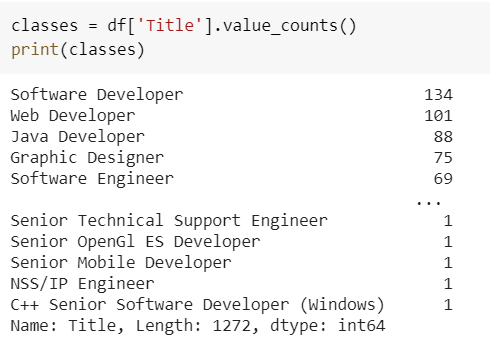
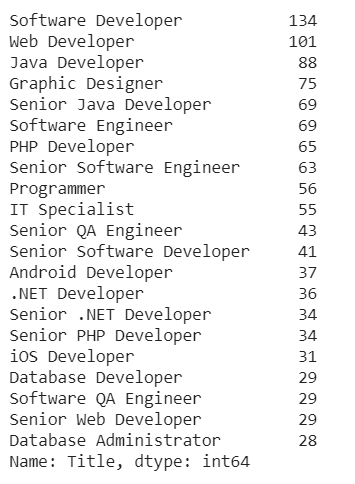

ML solution approach
Supervised or Unsupervised?
The dataset contained features and the target class: job title. Hence we follow a Supervised approach.
ML solution data
Type of data?
Dataset Type: Tabular (CSV)
| Sr. No | Attribute | Sample Value |
|---|---|---|
| 1 | RequiredQual | University degree; economical background... |
| 2 | Title | Software Developer |
| 3 | JobDescription | The position of Graphic Designer (GD) demands ... |
| 4 | JobRequirment | Graphic Designer will be responsible for every... |
Class Imbalance
How to tackle the class imbalance problem?
It is the problem in machine learning where the total number of a class of data (positive) is far less than the total number of another class of data (negative).
Solution:We removed the rows where a particular class is significantly less as compared to other classes
Class Imbalance:
Code:
# Modifying Job Titles Selecting only top 21 job titles, to manage class imbalance
classes = df['Title'].value_counts()[:21]
keys = classes.keys().to_list()
df = df[df['Title'].isin(keys)]
df['Title'].value_counts()/code>
Data Preprocessing
How was data preprocessed?
The 'Required Qualification' feature of the input was tokenized using python natural language toolkit(nltk).
Tokenized input:# tdif feature rep
vectorizer = TfidfVectorizer(tokenizer=LemmaTokenizer(), stop_words='english')
vectorizer.fit(X)
# transforming text to tdif features
tfidf_matrix = vectorizer.transform(X)
X_tdif = tfidf_matrix.toarray()The target column 'Title' was converted to categories using the LabelEncoder method in sklearn's preprocessing package.
Encoding text labels in categories:enc = LabelEncoder()
enc.fit(y.values)
y_enc=enc.transform(y.values)df.Title.value_counts().head(10).plot.bar(title="Top 10 Future Jobtitle")Algorithm
Why did we choose this algorithm?